Your body, beautifully measured. HealthTrack pulls your steps, heart, sleep,
workouts and labs into one calm dashboard, and gives you an AI coach who knows your
numbers. This guide walks you through it — starting with the few settings that switch everything
on, then every screen, and finally the quiet work it does in the background.
Everything stays on your machine. Your health data
is stored locally and never leaves your device — the only thing that ever goes out is the message
you send to the AI model you choose. Screens in this guide use sample data.
Start here — five minutes to a working app
Open Settings (bottom of the left menu, or the ⚙ on mobile). Three things turn the
app on. Do them in order and you'll get value from your very first day.
Connect Google Health. This is what fills the app with your real steps, heart rate,
sleep, workouts and body measurements. It's a one-time sign-in — see below.
Choose the model that powers your coach. Connect a ChatGPT subscription, paste an API
key for any provider, or run a fully private local model.
Fill in your profile. Sex, height, weight and goals let the app personalise your
calorie and macro targets and let the coach tailor its advice.
1 · Settings → Integrations → Connect Google Health
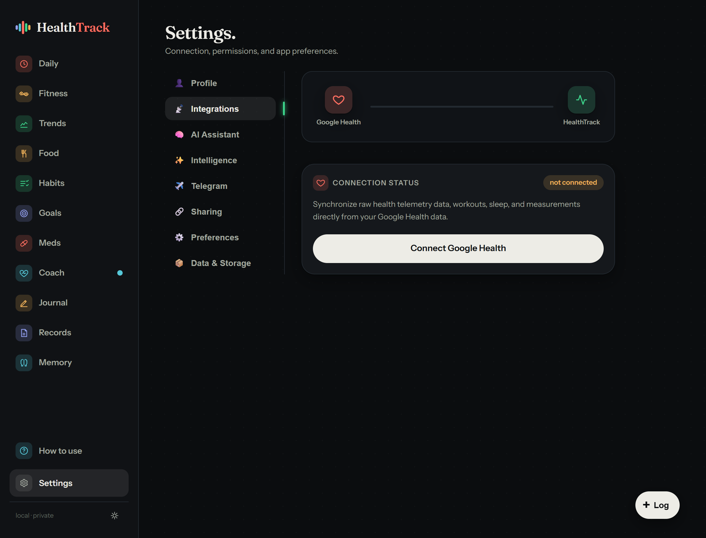
123
1The eight Settings tabs. Everything you can configure lives here — we cover each one below.
2Connection status. Shows whether HealthTrack is linked to Google Health yet.
3Connect Google Health. Tap, sign in once, and your dashboard fills in. Until you do, the app runs on demo data.
2 · Settings → AI Assistant → pick your coach's brain
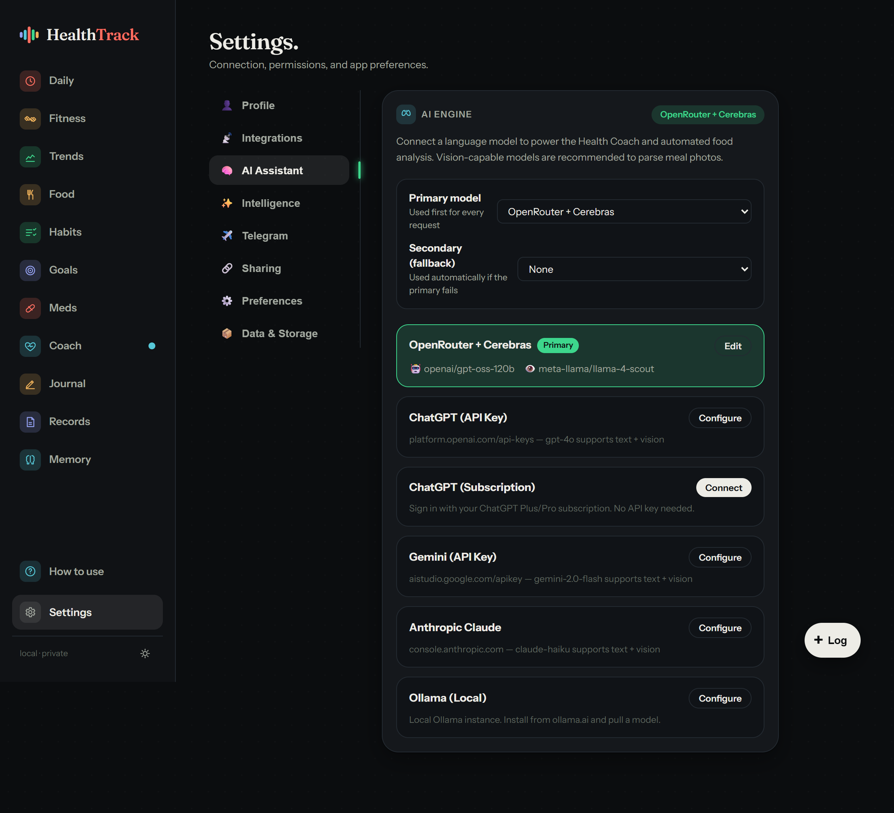
1234
1Primary model. The model used for every coach reply and for reading your meal photos. A capable cloud model gives the best coaching.
2Secondary (fallback). Used automatically if the primary is unavailable — handy belt-and-braces.
3ChatGPT (Subscription). Sign in with your existing ChatGPT Plus/Pro account using a one-time code — no API key, no extra bill.
4Ollama (Local). Run a model entirely on your own hardware for total privacy. Other options: an OpenAI / Gemini / Anthropic / OpenRouter API key.
One thing to know: reading food photos needs a vision-capable model. If you
pick a text-only local model as your primary, set a vision-capable secondary so photo logging still
works.
3 · Settings → Profile → tell the app about you
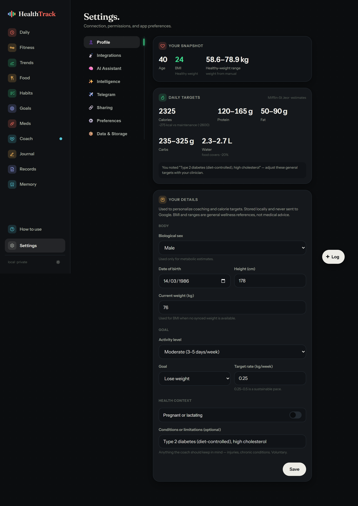
Your details drive a live BMI snapshot and personalised calorie, macro and water targets.
Set your biological sex, date of birth, height, current weight, activity level and goal
(lose / maintain / gain, with a weekly rate). The app turns these into daily calorie and macronutrient
targets you'll see on Daily, Food and Trends. The optional conditions field (e.g. diabetes,
high cholesterol) lets the coach keep its advice relevant and conservative.
That's the essential setup. The remaining tabs — Intelligence, Telegram, Sharing, Preferences and
Data & Storage — are all optional and explained next.
Every setting, explained
Settings has eight tabs. You've met the first three; here's what the rest do.
Profile · Integrations · AI Assistant
Covered in Start here above: your body details and targets, the Google
Health connection, and the model that powers your coach.
Intelligence — the coach's background brain
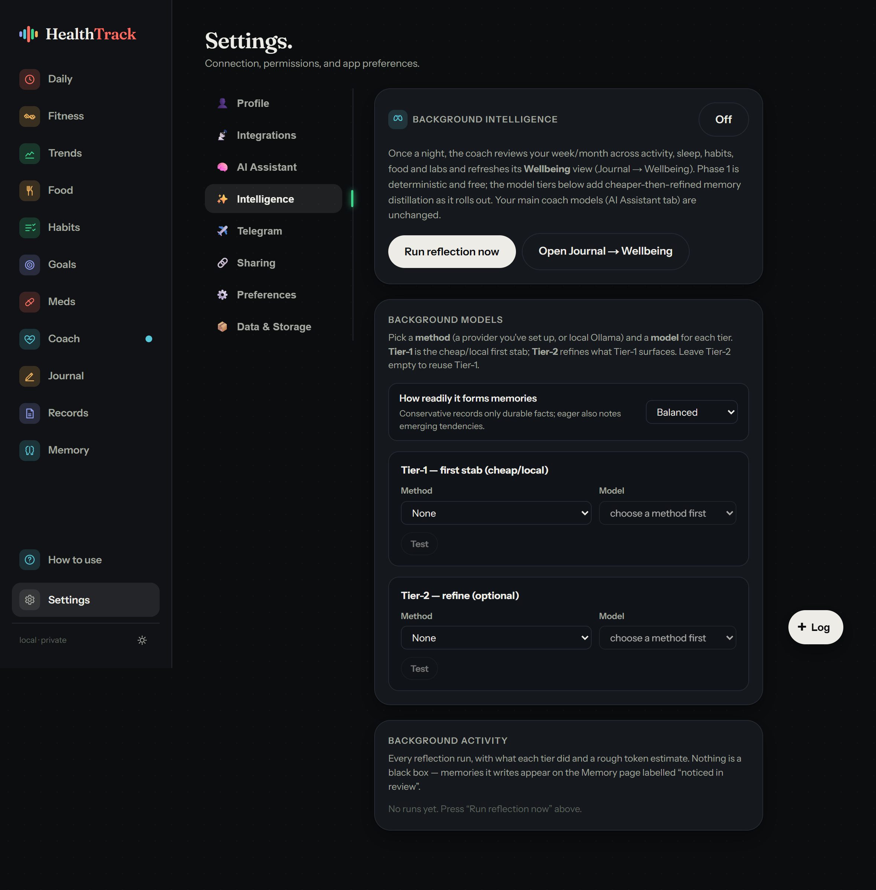
When this is on, once a night the coach quietly reviews your week and month — activity, sleep,
habits, food and labs — and writes a Wellbeing reflection (you'll find it under Journal). The
basic review is deterministic and free. If you want it to also distil durable memories about
you, point it at a cheap or local model:
Run at (quiet hour) — the local time the nightly review happens.
How readily it forms memories — conservative keeps only durable facts; eager also notes emerging tendencies.
Tier-1 / Tier-2 models — Tier-1 is a cheap/local first pass; Tier-2 (optional) refines it. Use a small model here, separate from your main coach.
Background activity — a full, plain-English log of every run, what it did and a rough token estimate. Nothing is a black box.
Telegram — coach + nudges in your pocket
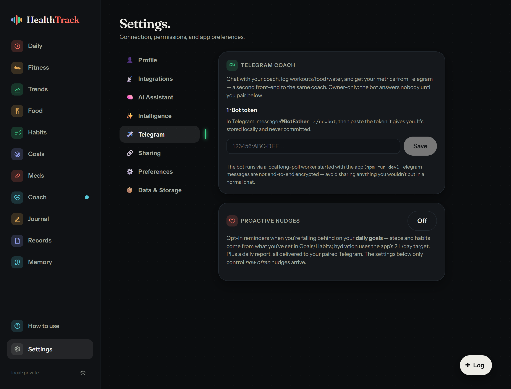
Pair a Telegram bot and you can chat with the same coach, log workouts, food and water, and pull
your metrics — all from Telegram. Message @BotFather in Telegram, run /newbot,
and paste the token it gives you. Below that, Proactive nudges (opt-in) sends gentle reminders
when you're falling behind on your goals or habits, plus a short daily report.
Privacy note: Telegram messages are not end-to-end encrypted — don't send
anything there you wouldn't put in a normal chat. The bot only answers people you've paired.
Sharing — let a partner or family member in
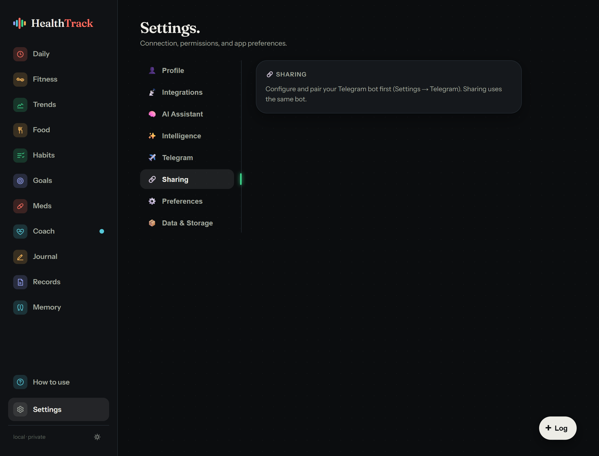
Sharing lets specific, approved people reach your coach through the same Telegram bot — useful for a
partner, parent or anyone helping look after your health. You choose exactly who, and what they can
see. (Set up Telegram first, since sharing uses the same bot.)
Preferences — the small comforts
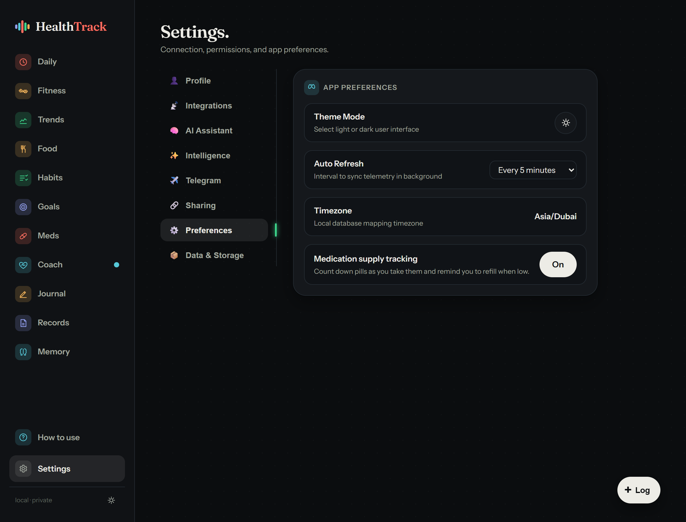
Theme mode — light or dark.
Auto refresh — how often the app quietly re-syncs your data in the background (e.g. every 5 minutes).
Timezone — the zone your health data is mapped into, so days line up correctly.
Medication supply tracking — count pills down as you take them and remind you to refill when you're low.
Data & Storage — your history, your machine
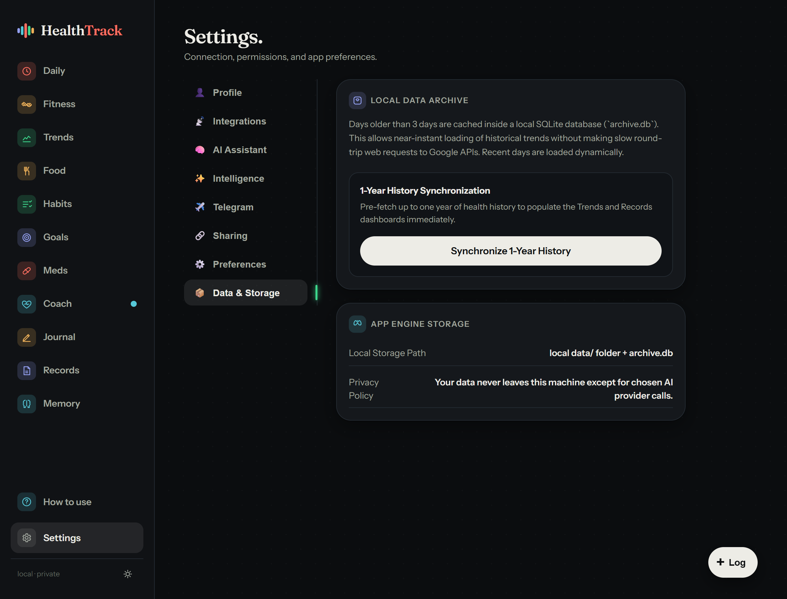
Days older than three days are cached in a local database (archive.db) so your Trends
and Records load instantly without slow round-trips to Google. Use Synchronize 1-Year History
once to back-fill a full year. The bottom line — restated here in black and white — is that your data
never leaves this machine except for the calls to the AI provider you chose.
Your screens, one by one
The left menu (a bottom bar on phones) moves between screens. Here's what each is for.
Daily — your whole day at a glance
The home screen gathers today into one calm view: movement, workouts, hydration, habits, sleep and
recovery, each with a plain-English read on how you're doing. The short notes only appear when
something's worth your attention — a quiet day stays quiet on purpose.
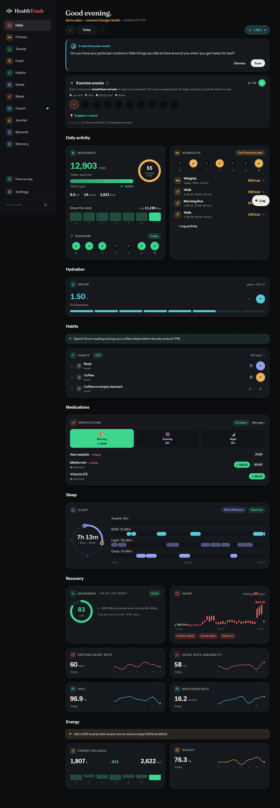
123456
1A note from your coach. An occasional, dismissable prompt — the coach reaching out, not a notification you have to chase.
2Exercise snacks. Each circle is one "breathless minute" of vigorous movement. Do one or several and tap a circle for each minute done.
3Movement. Steps, distance, floors, calories and active-zone minutes against your goals, with a goal streak.
4Workouts. Today's sessions with calories; tap the pencil to relabel or edit one.
5Sleep. Last night stage by stage, with efficiency and total time.
6Recovery. A readiness score (0–100) plus resting heart rate, HRV, SpO₂ and breathing rate. How readiness is worked out →
Fitness — training load and effort over time
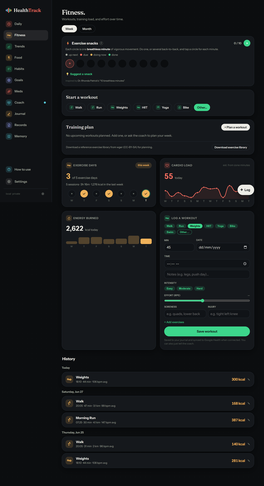
12345
1Exercise snacks — the same breathless-minute tracker as on Daily.
2Start a workout — pick a type (walk, run, weights, HIIT, yoga, bike…) to begin or plan one.
3Exercise days — how many days you trained this week against your target.
4Cardio load — your training strain trend, so you can build steadily without overdoing it. How it's calculated →
5Log a workout — record a session by hand with duration, intensity, exercises and how it felt.
Trends — the bigger picture
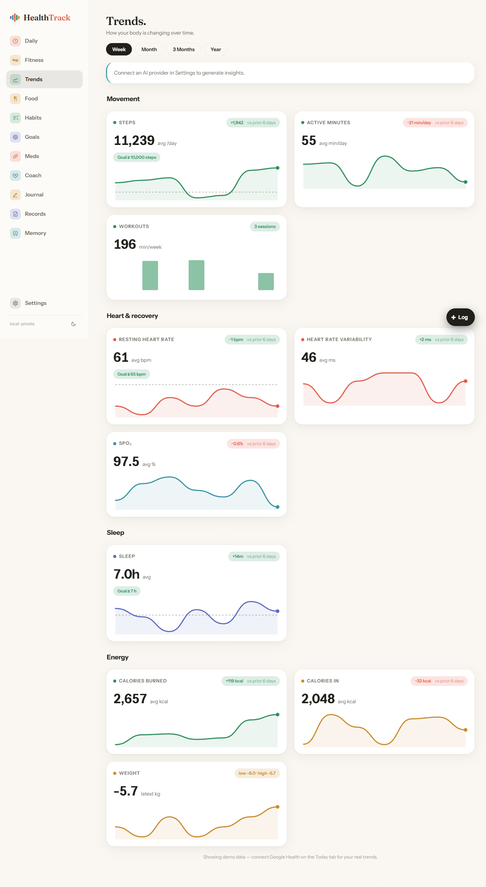
12345
1Range switch — week, month, 3 months or year. A written summary is available on request.
2Movement — steps, active minutes and workouts, with your goal line overlaid.
3Heart & recovery — resting heart rate, HRV and SpO₂ over time.
4Weight & energy — weight alongside calories in vs out.
5Nutrition & labs — protein, carbs, fat, glycemic load and your lab numbers (from Records) trended together.
Food — log a meal in seconds
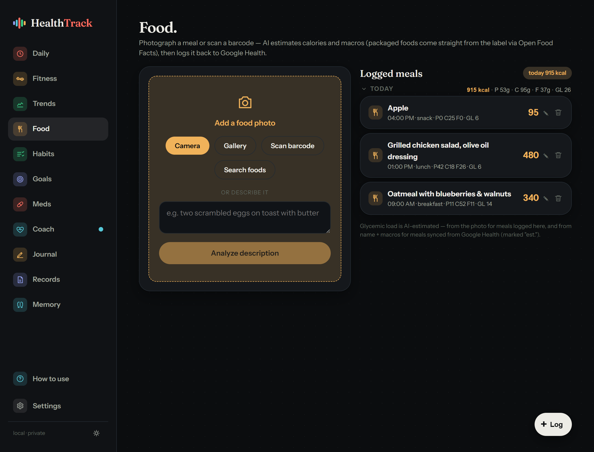
12345
1Photo — snap or upload a meal; a vision model estimates calories and macros.
2Barcode — scan packaged food for label-accurate numbers (via Open Food Facts).
3Search — look up a food in the USDA database.
4Describe it — just type "two scrambled eggs on toast" and let the coach estimate.
5Logged meals — today's entries with calories, macros and glycemic load; each is editable.
Habits — build the good ones, limit the rest
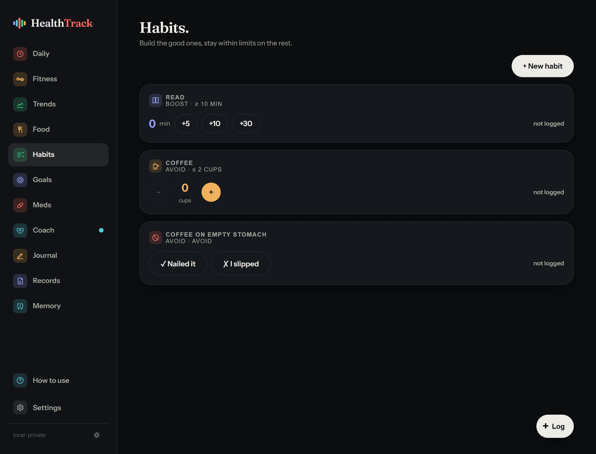
Create "do more" (boost) or "do less" (avoid) habits — minutes, counts or simple done/slipped.
Each habit tracks a streak and shows on Daily. Use + New habit to add your own — read ten
minutes, keep coffee under two cups, and so on. Your coach treats your habits as part of the picture.
Goals — the targets you're working toward
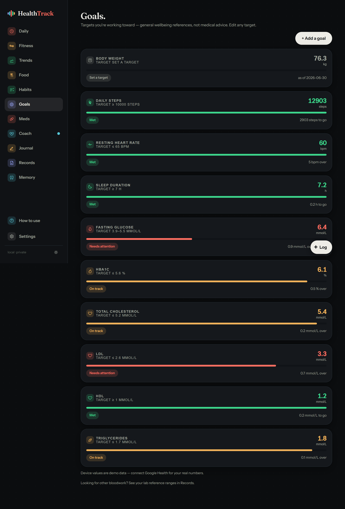
1234
1Add a goal — set your own targets for what matters to you.
2Device goals — weight, steps, resting heart rate, sleep; progress bars show Met at a glance.
3Needs attention — a target you're drifting from is flagged, not hidden.
4Lab-backed goals — HbA1c, LDL, glucose and more, pulled straight from your uploaded lab results in Records.
Meds — never miss a critical dose
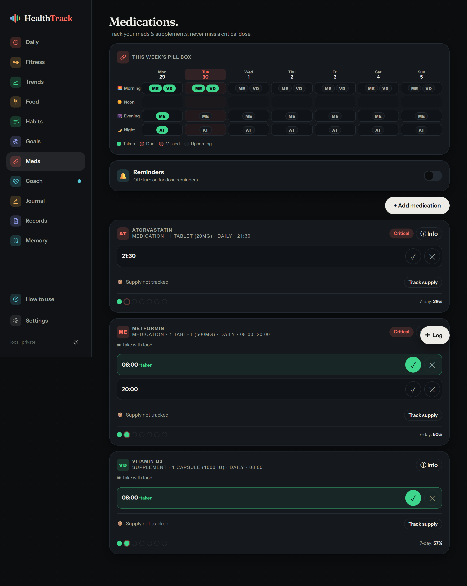
1234
1This week's pill box — a grid of every dose by day and time; taken, due, missed and upcoming at a glance.
2Reminders — opt-in dose reminders, on a separate clock from the rest of the app.
3Add medication — name, strength, schedule and whether it's critical or taken with food.
4Info — a plain-language research note for each drug, decoded from official sources (never invented). Your coach factors timing in — never dosing.
Coach — the heart of HealthTrack
Ask anything about your health and the coach answers using your numbers — trends, sleep,
workouts, labs, medications. Its advice is grounded in published guidance, kept conservative, and
always defers medical decisions to your clinician.
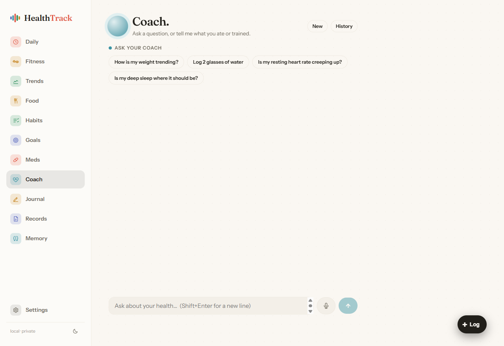
1234
1Your question — ask in plain language: "How's my weight trending?", "Is my resting heart rate creeping up?"
2The answer — specific to you, citing your actual figures, with a practical next step.
3Ask anything — type here, or tap the microphone to talk to it.
4+ Log — the coach can record things for you; more in Logging anything.
Journal — everything you've logged, in one place
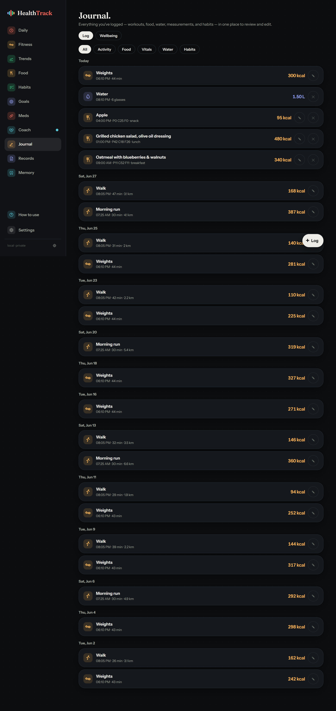
A single timeline of workouts, food, water, vitals and habits — filter by type, edit anything.
Switch to the Wellbeing tab to read the coach's own reflection on how you're doing — written
quietly in the background (see below).
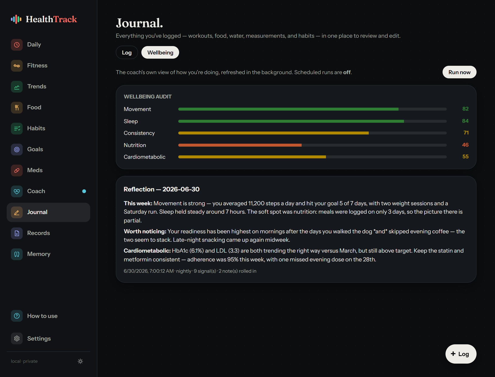
Journal → Wellbeing: a five-domain audit (movement, sleep, consistency, nutrition, cardiometabolic) and a short written reflection.
Records — your labs and reports
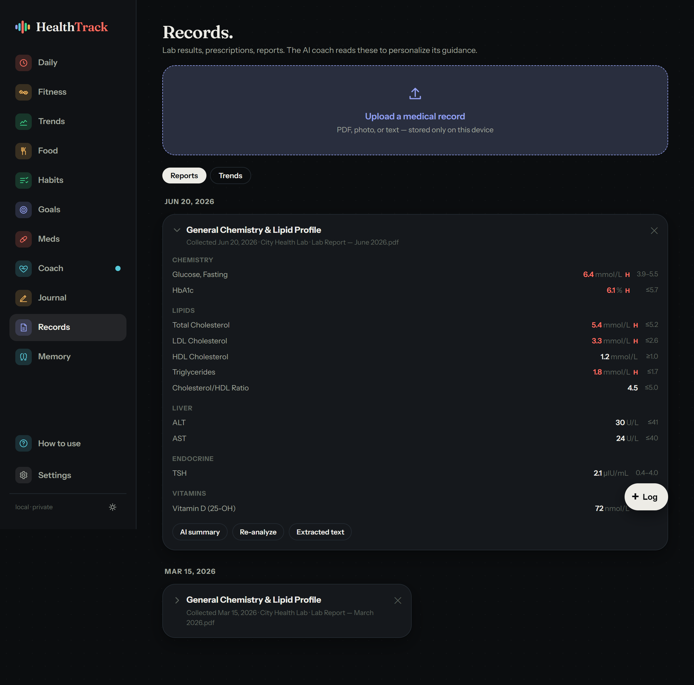
1234
1Upload — drop in a PDF, photo or text of a lab result or report; it's parsed and stored only on this device.
2Reports / Trends — read a single report, or watch a single marker move across reports over time.
3Results with ranges — every value sits next to its reference range, with out-of-range markers flagged.
4AI summary — a plain-language read of the report; the coach uses these to personalise its guidance.
Memory — what the coach remembers about you
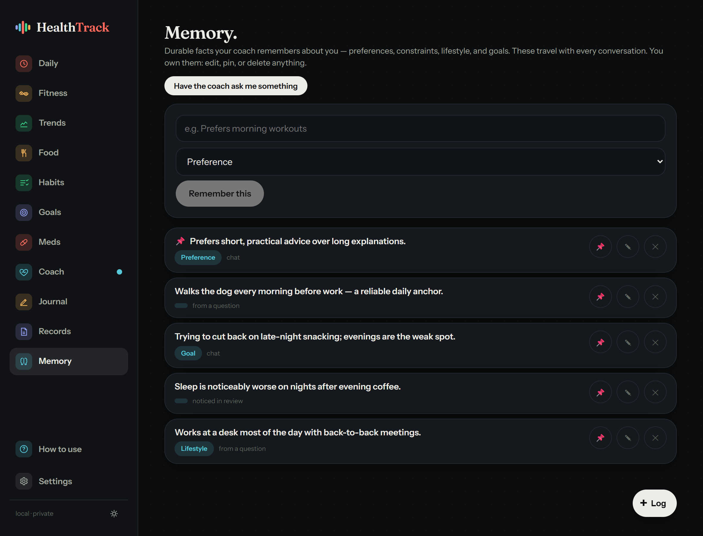
1234
1Have the coach ask you something — invite it to learn one useful thing about you.
2Add a memory — record a durable fact yourself and tag its category.
3A saved memory — a preference, routine, goal or constraint the coach will carry into every conversation.
4Where it came from — chat, a question it asked, or something it noticed in review. You own all of it: pin, edit or delete anything.
What happens in the background
A lot of HealthTrack's value is quiet. Here's the work it does without being asked.
Your readiness score
Google doesn't provide a readiness number, so HealthTrack derives one. Each morning it compares last
night's heart-rate variability, resting heart rate and sleep against your own
rolling two-week baseline. When they're better than usual you score high; when they're worse, it dips —
a nudge to take it easier. It's tuned to be read as a trend, not an exact figure, and it's built
on the same physiology that WHOOP and Oura use.
Cardio load
Also not in the Google data, so it's computed in-app from how hard and how long your heart works
during activity (heart rate relative to your resting rate, weighted toward recent days). Watching the
trend — and the balance between this week and your recent average — helps you build fitness steadily
without spiking into overtraining.
The nightly reflection & growing memory
If you switch on Intelligence, once a night the coach reviews your
week and month and writes the Wellbeing reflection you read in the Journal — a five-domain audit
plus a short narrative and a few suggested actions. With a model attached it can also distil durable
memories about you (under guard-rails you control), which then show up on the Memory page labelled
"noticed in review". Every run is logged in plain English in Settings → Intelligence.
Proactive nudges & reminders
With Telegram paired and nudges enabled, the coach reaches out when you're drifting from your goals
or habits, and can send a short daily report. You can also ask it to remind you of anything —
"remind me to take my evening walk at 6" — and it will, both in-app and on Telegram. Reminders you set
this way are one-offs that fire exactly when asked.
The coach is also your logger
You rarely need a form. Telling the coach "logged a 30-minute walk", "two glasses of water" or
"had oatmeal for breakfast" records it the same as if you'd filled one in — see below.
Tidying your workouts & caching your history
When a watch and phone both record the same session, HealthTrack merges the overlapping entries into
one so your day isn't double-counted. And, as noted under Data & Storage,
older days are cached locally so Trends and Records open instantly.
Three ways to log anything
However you prefer to work, recording something is quick:
Food screen photograph a meal, scan a barcode, search, or describe it in words.
+ Log button the floating button (bottom-right on every screen) is a quick menu for activity, hydration, weight, blood pressure, glucose and more — tap, type a number, done.
Tell your coach type or speak it in plain language and the coach records it for you.
Install it on your phone & computer
HealthTrack installs like a normal app — no app store needed:
Phone: open your HealthTrack address in the browser. On Android (Chrome), tap the
menu → Install app. On iPhone (Safari), tap Share → Add to Home Screen.
Computer: open it in Chrome or Edge and click the install icon in the address bar.
It then opens full-screen with its own icon and stays signed in.
If a screen won't load away from home: make sure the Tailscale app is
running and signed in on that device — it's what privately and securely connects you to your
HealthTrack. Your setup contact can help if you're unsure.